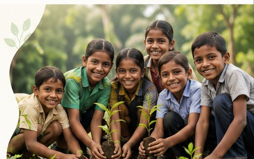
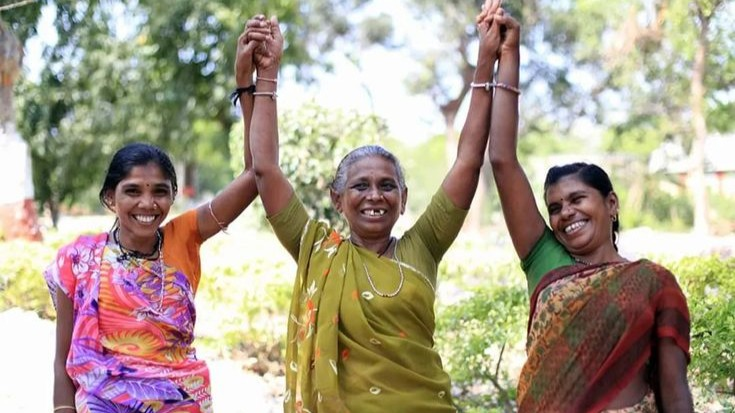
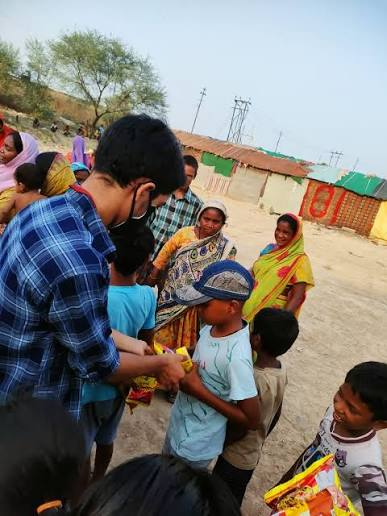

♥
01
Donate & Support
Make it easy for visitors to contribute through a clear, secure and transparent donation experience.
Donate Now →🔒 Secure▣ Simple✓ Transparent
INAMIGOS FOUNDATION
Creating a digital experience that makes it easier to support, participate in initiatives and understand the impact created by collective action.

Make it easy for visitors to contribute through a clear, secure and transparent donation experience.
Donate Now →Enable visitors to register easily and choose how they want to participate in the foundation's initiatives.
MEASURABLE CHANGE
Real figures from InAmigos Foundation's public website and published initiatives.
Impact figures are presented as a website feature concept; figures are based on information published by InAmigos Foundation.
FEATURED INITIATIVES
Explore the six key initiatives of InAmigos Foundation and discover how visitors can learn more or get involved.

Quality education and school support for underprivileged children.

Environmental conservation, tree planting and eco-friendly agriculture.

Women empowerment through skills, awareness and financial independence.

Providing food and clothing to people facing hardship and need.

Animal welfare through feeding, protection, care and support.
Skill development and employability through internships and career opportunities.
All six initiatives shown above are based on the current initiatives described on the InAmigos Foundation website.
TRUST & CONNECTION
Give beneficiaries and volunteers a human voice and help build credibility.
“This support helped our children continue learning with confidence.”
“Volunteering with InAmigos has given me purpose and a chance to give back.”
“Together we can create stronger communities and a better future.”
* Testimonials above are sample content used only to demonstrate the proposed website feature.
DESIGN OBJECTIVE
A user-friendly NGO website should help visitors understand the mission, see measurable impact, contribute, volunteer and connect with meaningful initiatives.
READY TO TAKE ACTION?
Use the official InAmigos donation route for real contributions.